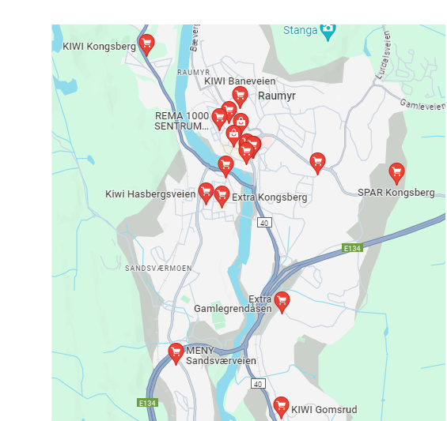

Supermarkets
There are so many supermarkets in kongsberg. To the left you can see a map of all the different exclusively food shops. The most common ones are Meny, Kiwi and Rema which are popular not only in Kongsberg, but in all of Norway. If you want some insider tips kiwi tends to be cheapest while meny is the most expensive. However Meny offers food of a much higher quality and this is important to keep in mind.
